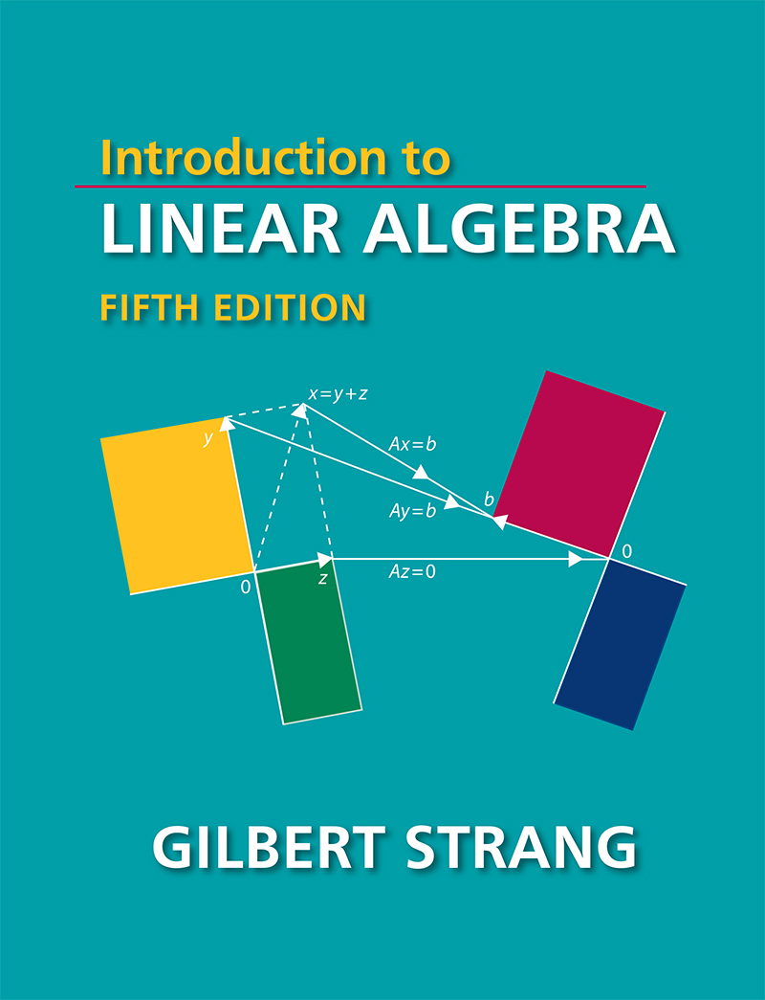
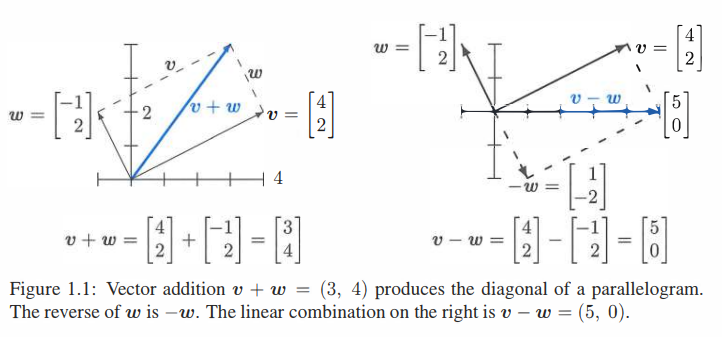
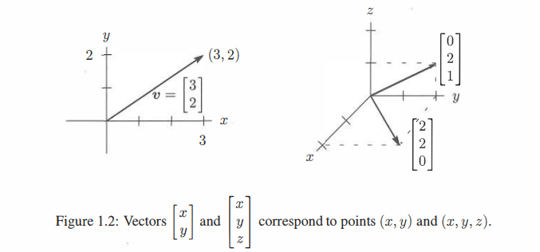
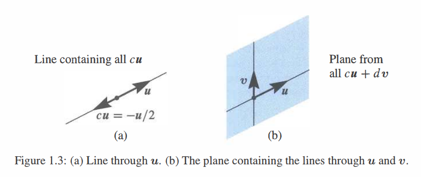

前言
我很高兴您使用线性代数导论的第五版。这是我在 MIT OpenCourseWare (ocw.mit.edu 和 YouTube) 上的视频讲座的文本。我希望这些讲座对您有用 (甚至可能很有趣！)。
数百所高校选择这本书作为基本线性代数课程教材。带薪休假让我有机会准备了两个关于概率统计和数据理解的新章节。当然也还有很多其他的改进——可能只有作者自己意识到... 以下为针对学生和所有读者的新增内容:
每小节以简短的摘要开始用以解释该节的内容。当您阅读新章节或者阅读之前的章节以在脑中回顾和组织已学内容，这些行可以作为快速指南并能帮助记忆。
另一个巨大的改变是本书的网站 math.mit.edu/linearalgebra。网站现在包含了本书中 Problem Sets 部分的答案。由于空间无限，这比只打印简短的答案更加灵活。目前有三个主要网站：
ocw.mit.edu 该 OpenCourseWare 网站有来自数千名学生和线性代数教师的信息。18.06 和 18.06SC 等课程包含完整学期课程的视频讲座。讲座根据本教材提供了对整个科目独立的复习——使得教授的时间保持空闲，而学生的则可能学到凌晨2点。(读者完全可以不用待在教室里。) 世界上有六百万人观看了这些视频 (amazing)。希望它们对您有帮助。
web.mit.edu/18.06 该网站包含当前学期已讲课程的家庭作业和测试 (含解答)，最早可以追溯到1996年。还有一些复习题，Java演示程序，课程代码和阅读材料 (包括视频讲座)。我的目标是通过能提供的所有课程材料尽可能让这本书对您有用。
math.mit.edu/linearalgebra 这已成为一个活跃的网站。现在包含 Solutions to Exercises 模块——提供阐述想法的场所。同时还有许多不同来源的新练习——有练习题，教科书的例题，MATLAB，Julia 和 Python 代码以及一系列的考试题 (包括 18.06 和其他课程) 用于复习。
欢迎访问线性代数网站。建议请发送至邮箱 linearalgebrabook@gmail.com。
第五版
封面展示了四个基本的子空间——左边的行空间和零空间，右边的列空间和 \(A^\mathrm{T}\) 的零空间。像这样说明一门学科的中心思想是不同寻常的！当您在第 3 章遇到这四个空间时，您将会理解为什么这张图片对线性代数如此重要。
在我的第一本书中，它们被命名为四个基本子空间并从一个矩阵 \(A\) 出发。\(A\) 的每一行是 \(n\) 维空间的一个向量。当矩阵有 \(m\) 行时，每一列是 \(m\) 维空间的一个向量。在线性代数中的关键操作是做列向量的线性组合。这正是矩阵——向量乘法的结果。\(Ax\) 是 \(A\) 的列的一个线性组合。
当我们取遍列向量的所有线性组合 \(Ax\)，就得到了列空间。如果这个空间包含向量 \(b\)，我们就可以解方程 \(Ax=b\)。
请特别注意1.3节，其中这些想法很早就出现了——并附有两个具体示例。您不必强迫自己在一天了解向量空间的所有细节！但在1.3节您将会看到本书中的第一个矩阵，以及它的列空间的一个图像。甚至包含 逆 矩阵以及它与微积分的联系。您将会以一种最好和最有效的方式学习线性代数语言：应用它。
每一章的每小节的结尾都有大量的习题。它们要求您运用在该小节的思想——列空间的维数，空间的一组基，矩阵 \(A\) 的秩，逆，行列式和特征值。许多问题要求在一个小矩阵上动手进行计算, 它们广受好评。Challenge Problems 部分的习题更进一步，可能也更深入。下面给出四个例子：
Section 2.1: Which row exchanges of a Sudoku matrix produce another Sudoku matrix ?
Section 2.7: If \(P\) is a permutation matrix, why is some power \(P^k\) equal to \(I\) ?
Section 3.4: if \(Ax=b\) and \(Cx=b\) have the same solutions for every \(b\), does \(A\) equal \(C\) ?
Section 4.1: What conditions on the four vectors \(r,\ n,\ c,\ l\) allow them to be bases for the row space, the nullspace, the column space, and the left nullspace of a 2 by 2 matrix ?
写在课程前面
方程 \(Ax=b\) 可以线性组合的语言加以解释。向量 \(Ax\) 可以认为是 \(A\) 的列的一个线性组合。这个方程实际上是在求一个能够生成向量 \(b\) 线性组合。解向量 \(x\) 可以从三个层次进行求解，这三个层次都很重要：
- 直接解法 通过前向消除和后向替换来求解 \(x\)。
- 矩阵解法 使用逆矩阵求解：\(x=A^{-1}b\) (如果 \(A\) 有逆)。
- 特解 (对于 \(Ay=b\)) plus 零解 (对于 \(Az=0\))。本书封面展示了解向量空间 \(x=y+z\)。
直接消除法是科学计算中使用最为频繁的算法。将矩阵 \(A\) 变成三角形——之后能够快速得到解。我们也能对四个子空间有一个基本的了解。但不会一直把时间花在练习消除法... 之后会有一些好的想法。
每一台新的超级计算机的速度都会在 \(Ax=b\) 上测试：单纯的线性代数。但即使是超级计算机也不想计算逆矩阵：太慢了。矩阵逆给了一个最简洁的求解公式 \(x=A^{-1}b\) 但却不是计算速度最快的。同时每个人都必须知道行列式的计算会更慢——线性代数课程不应该从 \(n \times n\) 行列式公式开始。这些公式有一席之地，但不是第一位。
本书结构
在这篇序言中，您可以了解到本书的风格及其目标。这个目标是严肃的，要向您解释线性代数这个美丽又有用的数学分支。您将会看到线性代数的应用是如何强化其核心思想的。这本书循序渐进地从数字讲到向量，再到子空间。每一过程都是自然而然的，每个人都能理解。
以下是关于使用本书学习和教学的12点建议：
-
第 1 章首先讲述向量和点积。如果之前的课堂已经了解过，可以重点关注线性组合。1.3节提供了三个独立的向量——线性组合能够填满整个3维空间，和位于一个平面的三个相关向量。这两个例子是学习线性代数的开始。
-
第 2 章 \(Ax=b\) 的行的图像和列的图像。线性代数的核心就在于 \(A\) 的行和 \(A\) 的列之间的联系：相同的数目但非常不同的图像。然后开始矩阵代数：一个消除矩阵 (elimination matrix) \(E\) 乘以 \(A\) 得到零。目标是掌握整个过程——从 \(A\) 开始，与一系列的 \(E\) 相乘，最后得到 \(U\)。
消除 (Elimination) 从美丽的形式 \(A=LU\) 中可见一斑。下三角 \(L\) 包含了前向消去的步骤，\(U\) 是 上三角 的，用于后向替换过程。 -
第 3 章讲述线性代数的最佳层面：子空间。列空间包含列的所有线性组合。一个关键问题是：这些列中有多少是必要的 ？答案会告诉我们列空间的维数以及 \(A\) 的关键信息。我们最后会得出线性代数的基本定理。
-
当方程个数多于未知数个数时，几乎可以确定 \(Ax=b\) 没有解。我们不能抛弃每一接近当不完全精确的度量！当使用 最小二乘 求解时，关键点将会是矩阵 \(A^\mathrm{T}A\)。当 \(A\) 是矩形时，这个奇妙的矩阵在应用数学中无处不在。
-
行列式给出了之前的所有公式——Cramer法则，逆矩阵，\(n\) 维体积。我们不用这些公式进行计算。这些公式计算的很慢。但是 \(\det A=0\) 表示矩阵是奇异的：这是特征值的关键。
-
6.1节 解释 \(2 \times 2\) 矩阵的特征值。许多课程想提前讲述特征值。直接从第 3 章来到本章是完全合理的，因为 \(2 \times 2\) 矩阵的行列式是简单的。关键等式 是 \(Ax=\lambda x\)。
特征值和特征向量是理解方阵的相当新奇的方法。它们不仅用于 \(Ax=b\)，还用于动力学方程比如 \(du/dt=Au\)。这里的思想总是一致的：从特征向量的方向着手。在这些特殊的方向上，\(A\) 像一个单独的数 (特征值 \(\lambda\))一样作用并且此时问题是一维的。第 6 章一个本质上的重点是 对角化对称矩阵。当所有的特征值大于零时，矩阵被称为“正定的”。这个重要概念联系了课程的全部知识点——正主元 (pivot)、行列式和特征值以及能量。我努力在书中达到这一点，并用例子加以解释。
-
第 7 章是全新的一章。该章介绍了 奇异值 和 奇异向量。它们将所有矩阵分成简单的部分，按重要性排序。您将会看到一种压缩图片的方法。特别是您可以分析一个充满数据的矩阵。
-
第 8 章阐述 线性变换。这是没有坐标轴的几何，没有坐标的代数。当选择一组基时，我们得到了尽可能好的矩阵。
-
第 9 章从实数和实向量转向复向量和复矩阵。傅里叶矩阵 (Fourier matrix) \(F\) 将是我们见过的最重要的复矩阵。并且快速傅里叶变换 (快速乘以 \(F\) 和 \(F^{-1}\)) 是革命性的。
-
第 10 章通篇包含应用，远多于任何一门单独课程所需：
10.1 图和网络——基尔霍夫定律的边缘节点矩阵
10.2 工程中的矩阵——与矩阵方程平行的微分方程
10.3 马尔科夫矩阵——出现在谷歌的 PageRank 算法中
10.4 线性编程——新的约束 \(x \geq 0\) 和最小化代价
10.5 傅里叶级数——用于函数和数字信号处理
10.6 计算机图形学——通过矩阵移动、旋转和压缩图像
10.7 密码学中的线性代数——这一新部分编写起来很有趣。希尔密码不太安全。它使用模运算：从 \(0\) 到 \(p-1\) 的整数。乘法得到 \(4 \times 5 \equiv 1(mod\ 19)\)。对此解码得到 \(4^{-1} \equiv 5\)。 -
线性代数课程应该怎样包含计算？这可以得到对矩阵的新理解——每节课都会找到一个平衡点。MATLAB 和 Maple 以及 Mathematica 在不同方面非常强大。Julia 和 Python 都是开源的且可以直接在 Web 上直接获取。那些较新的编程语言同样也十分强大！
基本命令从第 2 章开始。然后第 11 章转向专业算法。您可以在网站上上传和下载本课程的代码。
-
关于概率和统计的第 12 章是新增的，具有真正重要的应用。当随机变量不相互独立时我们得到协方差矩阵。幸运的是它们是对称正定的。此时需要第 6 章的线性代数知识。
线性代数的多样性
微积分主要是关于一种特殊运算 (微分) 和其逆运算 (积分)。当然我认为微积分是很重要的... 但数学的许多应用是离散的不是连续的，是数字的而不是模拟的。数据的时代已经来临！你将会在我的网站上找到一篇名为 “Too Much Calculus” 的轻松文章。事实上，向量和矩阵已经成为人们需要了解的语言。
该语言的一部分是奇妙多样的举证。让我举三个例子 (依次是对称矩阵、正交矩阵和三角矩阵)： \[ \begin{bmatrix}2&-1&0&0\\-1&2&-1&0\\0&-1&2&-1\\0&0&-1&2\end{bmatrix}\ \frac{1}{2}\begin{bmatrix}1&1&1&1\\1&-1&1&-1\\1&1&-1&-1\\1&-1&-1&1\end{bmatrix}\ \begin{bmatrix}1&1&1&1\\0&1&1&1\\0&0&1&1\\0&0&0&1\end{bmatrix} \]
关键目标是学会 “阅读” 矩阵。你需要了解这些数字的意义。这其实是数学的本质——模式及其所代表的含义。
我使用 斜体 和 粗体 标出每页的关键词。我知道你有时候想快速阅读，寻找重要的行。
最后想分享一些想法给老师。你可能认为方向是对的，并且想知道你的学生是否准备好。给他们一个机会！数以千记的学生经常写信给我，经常提些建议，同时令人惊讶的是更多是表达感谢。他们知道这本书有一个目标，因为老师和教材都站在他们这边。线性代数是一门很棒的学科，好好享受它吧。
致谢
人生中最令人鼓舞的事是感觉自己正在做一些对自己人生有价值的事。数以百计的慷慨的读者向本书贡献了他们的想法、例子和更正 (还有最爱的矩阵)。谢谢你们所有人。
Ashley C. Fernandes 对本书的作成功不可没。他负责准备相应的 \(\LaTeX\) 文件。在他的支持下本书更改了6次，既是为了准确性同时也是自身的严格要求。和朋友一起共事是十分令人愉快的一件事。
MIT 数学系内外的朋友都很棒。Alan Edelman 负责 Julia 以及更多的部分，Alex Townsend 负责 7.1 节的标志示例，而 Peter Kempthorne 负责 7.3 节的金融示例：这些都很突出。Don Spickler 的密码学网站简直太棒了。我感谢 Jon Bloom、Jack Dongarra、Hilary Finucane、Pavel Grinfeld、Randy LeVeque、David Vogan、Liang Wang 和 Karen Willcox。7.3节的 “eigenfaces” 由 Matthew Turk 和 Jeff Jauregui 负责。Raj Rao 在密歇根大学的精彩课程加速了向奇异值迈出的一大步。
这本书的诞生主要归功于我在牛津大学的愉快假期。谢谢 Nick Trefethen 和其他所有人。其实是本书的读者！祝您工作顺利。
作者背景
这是我关于线性代数的第 9 本教材，我犹豫着要不要写我自己。重要的数学以及读者。接下来的段落添加了一些简短和个人的内容，以此表明本书是由人编写的。
我出生在芝加哥，在华盛顿、辛辛那提和圣路易斯上过学。我的大学是麻省理工学院 (我的线性代数课程 非常抽象)。之后去了牛津大学和加州大学洛杉矶分校，然后回到麻省理工学院很长一段时间。我不知道有多少学生学过 18.06 课程 (包括 ocw.mit.edu 上的视频的话超过了6百万)。采用新方式授课的时机是正确的，因为这个奇妙的主题只向数学专业的学生展示——我们需要向世界开放线性代数课程。
我对教授数学的生活非常感激，这种感激难以用言语表达。
Gilbert Strang
附言
我希望我下一本书 (2018?) 包含 数据学习 相关内容。这门学科正在迅速成长，尤其是“深度学习”。通过知晓基于由旧数据组成的训练集的函数，我们可以估计基于新数据的函数。这个估计仅仅使用一个简单的线性函数 \(f(x)=\max (0,x)\)。我们对 \(n\) 个矩阵乘法进行优化来实现深度的学习：\(\boldsymbol{x}_1=f(A_1 \boldsymbol{x}+\boldsymbol{b}_1),\boldsymbol{x}_2=f(A_2 \boldsymbol{x}_1+\boldsymbol{b}_2), \ldots, \boldsymbol{x}_n=f(A_n \boldsymbol{x}_{n-1}+\boldsymbol{b}_n)\)。在输入 \(\boldsymbol{x}\) 和输出 \(\boldsymbol{x}_n\) 之间是 \(n-1\) 个隐藏层——它们基于训练集估计 \(F(\boldsymbol{x})\)。
THE MATRIX ALPHABET
| \(A\) | Any Matrix | \(P\) | Permutation Matrix |
| \(B\) | Basis Matrix | \(P\) | Projection Matrix |
| \(C\) | Cofactor Matrix | \(Q\) | Orthogonal Matrix |
| \(D\) | Diagonal Matrix | \(R\) | Upper Triangular Matrix |
| \(E\) | Elimination Matrix | \(R\) | Reduced Echelon Matrix |
| \(F\) | Fourier Matrix | \(S\) | Symmetric Matrix |
| \(H\) | Hadamard Matrix | \(T\) | Linear Transformation |
| \(I\) | Identity Matrix | \(U\) | Upper Triangular Matrix |
| \(J\) | Jordan Matrix | \(U\) | Left Singular Vectors |
| \(K\) | Stiffness Matrix | \(V\) | Right Singular Vectors |
| \(L\) | Lower Triangular Matrix | \(X\) | Eigenvector Matrix |
| \(M\) | Markov Matrix | \(\varLambda\) | Eigenvalue Matrix |
| \(N\) | Nullspace Matrix | \(\varSigma\) | Singular Value Matrix |
Introduction to Vectors
线性代数的核心是两个运算——均作用于向量。向量相加得到 \(\boldsymbol{v}+\boldsymbol{w}\)。与数字 \(c\) 和 \(d\) 分别相乘得到 \(c \boldsymbol{v}\) 和 \(d \boldsymbol{w}\)。组合两种运算 (\(c \boldsymbol{v}\) 与 \(d \boldsymbol{w}\) 相加) 得到 线性组合 \(c \boldsymbol{v} + d \boldsymbol{w}\)。
线性组合 \(\qquad c\boldsymbol{v}+d\boldsymbol{w}=c \begin{bmatrix}1\\1\end{bmatrix}+d \begin{bmatrix}2\\3\end{bmatrix}=\begin{bmatrix}c+2d\\c+3d\end{bmatrix}\)
例子\(\qquad \boldsymbol{v}+\boldsymbol{w}=\begin{bmatrix}1\\1\end{bmatrix}+\begin{bmatrix}2\\3\end{bmatrix}=\begin{bmatrix}3\\4\end{bmatrix}是\ c=d=1\ 时的线性组合\)
线性组合在这个主题中非常重要！有时我们想要一个特定的组合，选取 \(c=2\) 和 \(d=1\) 将会得到 \(c \boldsymbol{v}+d \boldsymbol{w}=(4,\ 5)\)。其他时候我们想要 \(\boldsymbol{v}\) 和 \(\boldsymbol{w}\) 的所有线性组合 (通过 \(c\) 和 \(d\) 所有的取值)。
\(c\boldsymbol{v}\) 生成的所有向量均位于一条直线上。当 \(w\) 不在该直线上时, \(c \boldsymbol{v}+d \boldsymbol{w}\) 的线性组合将充满整个二维平面。 给定四维空间的四个向量 \(\boldsymbol{u},\boldsymbol{v},\boldsymbol{w},\boldsymbol{z}\)，其线性组合 \(c \boldsymbol{u}+d \boldsymbol{v}+e \boldsymbol{w}+f \boldsymbol{z}\) 可能填满整个空间——但不总是如此。这些向量及其线性组合也可能位于一个平面或一条直线上。
第一章解释了这些中心思想，之后的一切都建立在这些思想之上。我们从二维和三维向量开始，它们画起来是容易理解的，然后我们转向更高的维度。线性代数真正深刻的特点是它能够十分自然的拓展到 \(n\) 维空间。你心中关于线性代数的图像完全正确，尽管绘制十维向量是不可能的。
本章是梦开始的地方 (进入 \(n\) 维线性空间)。首先是 1.1 和 1.2 节的向量运算，然后 1.3 节概述了三个基本思想。
1.1 向量加法 \(\boldsymbol{v}+\boldsymbol{w}\) 及线性组合 \(c \boldsymbol{v}+d \boldsymbol{w}\)。
1.3 矩阵 \(A\)，线性方程组 \(A \boldsymbol{x}=\boldsymbol{b}\)，解 \(\boldsymbol{x}=A^{-1}\boldsymbol{b}\)。
向量和线性组合
\(3\boldsymbol{v}+5\boldsymbol{w}\) 是向量 \(\boldsymbol{v}\) 和 \(\boldsymbol{w}\) 的一个典型 线性组合。
对于 \(\boldsymbol{v}=\begin{bmatrix} 1 \\ 2 \end{bmatrix}\) 和 \(\boldsymbol{w}=\begin{bmatrix} 2 \\ 3 \end{bmatrix}\) 其组合为 \(3\begin{bmatrix} 1 \\ 1 \end{bmatrix}+5\begin{bmatrix} 2 \\ 3 \end{bmatrix}=\begin{bmatrix}3+10\\3+15\end{bmatrix}=\begin{bmatrix}13\\18\end{bmatrix}\)。
向量 \(\begin{bmatrix}2\\3\end{bmatrix}=\begin{bmatrix}2\\0\end{bmatrix}+\begin{bmatrix}0\\3\end{bmatrix}\) 在 \(xy\) 平面上经过 \(x=2\) 和 \(y=3\)。
组合 \(c\begin{bmatrix}1\\1\end{bmatrix}+d\begin{bmatrix}2\\3\end{bmatrix}\) 填满整个 \(xy\) 平面。它们可以生成每一个 \(\begin{bmatrix}x\\y\end{bmatrix}\)。
组合 \(c\begin{bmatrix}1\\1\\1\end{bmatrix}+d\begin{bmatrix}2\\3\\4\end{bmatrix}\) 填满 \(xyz\) 空间的一个平面。同 \(\begin{bmatrix}1\\1\\1\end{bmatrix},\begin{bmatrix}3\\4\\5\end{bmatrix}\) 生成的平面相同。
但是 \(\begin{matrix}c+2d=1\\c+3d=0\\c+4d=0\end{matrix}\) 无解因为该方程右端 \(\begin{bmatrix}1\\0\\0\end{bmatrix}\) 不在该平面上。
"你不能将苹果与橘子相加。" 奇怪的是，这就是向量的原因。我们有两个独立的数 \(v_1\) 和 \(v_2\)。该数对给出一个 二维向量 \(\boldsymbol{v}\): \[ \textbf{列向量}\boldsymbol{v} \quad\quad \boldsymbol{v}=\begin{bmatrix}v_1\\v_2\end{bmatrix} \quad \begin{matrix}v_1=\boldsymbol{v}的第一个分量\\v_2=\boldsymbol{v}的第二个分量\end{matrix} \] 我们将 \(\boldsymbol{v}\) 写成 列 而不是行的形式。到目前为止的重点是用一个单独字母 \(\boldsymbol{v}\) (加粗斜体) 来表示数对 \(v_1\) 和 \(v_2\) (斜体)。
尽管我们不能将 \(v_1\) 和 \(v_2\) 相加，但我们会将 向量相加。\(\boldsymbol{v}\) 和 \(\boldsymbol{w}\) 的各个分量在加法中保持独立： \[ \begin{matrix}\textbf{向量}\\\textbf{加法}\end{matrix} \qquad \boldsymbol{v}=\begin{bmatrix}v_1\\v_2\end{bmatrix} \quad 和 \quad \boldsymbol{w}=\begin{bmatrix}w_1\\w_2\end{bmatrix} \quad 相加得到 \quad \boldsymbol{v}+\boldsymbol{w}=\begin{bmatrix}v_1+w_1\\v_2+w_2\end{bmatrix}. \] 减法遵循同样的规则：\(\boldsymbol{v}-\boldsymbol{w}\) 的分量分别是 \(v_1-w_1\) 和 \(v_2-w_2\)。
另一个基本的运算是 标量乘法。向量能与 2 或 -1 或任意数 \(c\) 相乘。为了得到 \(2 \boldsymbol{v}\)，令 \(\boldsymbol{v}\) 的每个分量乘 2 得到：
\[ \begin{matrix}\textbf{标量}\\\textbf{乘法}\end{matrix} \qquad 2 \boldsymbol{v}=\begin{bmatrix}2v_1\\2v_2\end{bmatrix}=\boldsymbol{v}+\boldsymbol{v} \quad -\boldsymbol{v}=\begin{bmatrix}-v_1\\-v_2\end{bmatrix}. \]
\(c \boldsymbol{v}\) 的分量为 \(cv_1\) 和 \(cv_2\)。\(c\) 被称为“标量”。
注意 \(-\boldsymbol{v}\) 和 \(\boldsymbol{v}\) 的和是零向量。记作 \(\mathbf{0}\)，与数字 0 不同！向量 \(\mathbf{0}\) 分量为 0 和 0。请原谅我反复强调向量与其分量之间的差异。线性代数建立在这些运算 \(\boldsymbol{v}+\boldsymbol{w}\) 和 \(c \boldsymbol{v}\) 和 \(d \boldsymbol{w}\) 之上——向量相加和标量相乘。
线性组合
现在我们组合加法和标量乘法得到 \(\boldsymbol{v}\) 和 \(\boldsymbol{w}\)的 “线性组合”。将 \(\boldsymbol{v}\) 乘 \(c\)，\(\boldsymbol{w}\) 乘 \(d\)然后相加得到 \(c \boldsymbol{v}+d \boldsymbol{w}\)。
\(c \boldsymbol{v}\) 和 \(d \boldsymbol{w}\) 的和是线性组合 \(c \boldsymbol{v}+d \boldsymbol{w}\)。
四个特别的线性组合分别是：求和，作差，乘零和标量相乘： \[ \begin{align} 1 \boldsymbol{v}+1 \boldsymbol{w}&=\text{sum of vectors in Figure 1.1a} \\ 1 \boldsymbol{v}-1 \boldsymbol{w}&=\text{difference of vectors in Figure 1.1b} \\ 0 \boldsymbol{v}+0 \boldsymbol{w}&=\textbf{zero vector} \\ c \boldsymbol{v}+0 \boldsymbol{w}&=\text{vector}\ c \boldsymbol{v}\ \text{in the direction of}\ \boldsymbol{v} \end{align} \]
零向量总是一个可能的线性组合 (它的系数为0)。每次我们得到一个向量的“空间”，都会包括零向量。这个大的视野，考虑 \(\boldsymbol{v}\) 和 \(\boldsymbol{w}\) 的所有线性组合，就是线性代数要做的事。
下面的图展示了你可以怎样可视化向量。对于代数而言，我们只需要分量 (比如 4 和 2)。那个向量 \(\boldsymbol{v}\) 被表示为一个箭头。该箭头在向右经过 \(v_1=4\) 个单位长度，向上通过 \(v_2=2\) 个单位长度。它最终止于一个点，其 \(x,y\) 坐标是 \(4,2\)。该点是这个向量的另一种表示——所以我们有三种方式去描述 \(\boldsymbol{v}\)：
\[向量\boldsymbol{v}的表示 \qquad 两个数字 \quad 始于 (0,0) 的箭头 \quad 平面上的点\]
相加使用数字。可视化 \(\boldsymbol{v}+\boldsymbol{w}\) 使用箭头：向量加法 (头尾相接)，在 \(\boldsymbol{v}\) 的终点放置 \(\boldsymbol{w}\) 的起点。

我们先沿着 \(\boldsymbol{v}\) 然后沿着 \(\boldsymbol{w}\) 行进。或者我们沿着对角线 \(\boldsymbol{v}+\boldsymbol{w}\) 走捷径。当然我们也可以先沿着 \(\boldsymbol{w}\) 再沿着 \(\boldsymbol{v}\)。换句话说，\(\boldsymbol{w}+\boldsymbol{v}\) 给出与 \(\boldsymbol{v}+\boldsymbol{w}\) 相同的答案。这些是沿着平行四边形的不同方式（在这个例子中它是一个矩形）。
三维向量
有两个分量的向量关联到 \(xy\) 平面的一个点。\(\boldsymbol{v}\) 的分量为该点的坐标：\(x=v_1\) 和 \(y=v_2\)。当从 \((0,0)\) 出发时，箭头终于点 \((v_1,v_2)\)。现在允许向量有三个分量 \(v_1,v_2,v_3\)。
\(xy\) 平面被三维 \(xyz\) 平面取代。下面是一些经典的向量 (仍然是列向量但有三个分量)：
\[ \boldsymbol{v}=\begin{bmatrix}1\\1\\-1\end{bmatrix}\quad 和 \quad \boldsymbol{w}=\begin{bmatrix}2\\3\\4\end{bmatrix}\quad 和 \quad \boldsymbol{v}+\boldsymbol{w}=\begin{bmatrix}3\\4\\3\end{bmatrix}. \]
向量 \(\boldsymbol{v}\) 关联到三维空间的一个箭头。通常该箭头始于“原点”，\(xyz\) 轴交于该点且坐标为 \((0,0,0)\)。箭头终于坐标为 \(v_1,v_2,v_3\) 的点。在 列向量 和 始于原点的箭头 和 箭头终止的点 这三者之间有一个完美的对应。
平面中的向量 \((x,y)\) 与三维空间 \((x,y,0)\) 是不同的！

从现在开始 \(\boldsymbol{v}=\begin{bmatrix}1\\1\\-1\end{bmatrix}\) 也可以写成 \(\boldsymbol{v}=(1,1,-1)\)。
为了节省空间，将向量表示为行的形式 (位于括号中)。但是 \(\boldsymbol{v}=(1,1,-1)\) 不是行向量！它毫无疑问是列向量，只是暂时躺平了。行向量 \(\begin{bmatrix}1&1&-1\end{bmatrix}\) 是完全不同的概念，尽管它有相同的三个分量。这个 \(1\times3\) 行向量是 \(3\times1\) 列向量 \(\boldsymbol{v}\) 的“转置”。
在三维情况下，\(\boldsymbol{v}+\boldsymbol{w}\) 仍然一次计算一个分量。此时向量和有分量 \(v_1+w_1\)，\(v_2+w_2\) 和 \(v_3+w_3\)。向量加法在 4 或 5 或者 \(n\) 维上与此类似。当 \(\boldsymbol{w}\) 起始于 \(\boldsymbol{v}\) 的终点时，第三条边就是 \(\boldsymbol{v}+\boldsymbol{w}\)。另一个方式是沿着平行四边形得到 \(\boldsymbol{v}+\boldsymbol{w}\)。问：这四条边是否位于同一平面吗？是。并且和 \(\boldsymbol{v}+\boldsymbol{w}-\boldsymbol{v}-\boldsymbol{w}\) 围绕一圈产生零向量。
三维空间中三个向量的线性组合的例子为 \(\boldsymbol{u}+4\boldsymbol{v}-2\boldsymbol{w}\)：
\( \begin{matrix} \text{Linear combination}\\ \text{Multiply by 1,4,-2}\\ \text{Then add} \end{matrix} \qquad \qquad \begin{bmatrix} 1\\0\\3 \end{bmatrix}+ 4\begin{bmatrix} 1\\2\\1 \end{bmatrix}- 2\begin{bmatrix} 2\\3\\-1 \end{bmatrix}= \begin{bmatrix} 1\\2\\9\end{bmatrix}. \)
几个重要问题
对于单个向量 \(\boldsymbol{u}\)，唯一可能线性组合是向量乘法 \(c \boldsymbol{u}\)。对于两个向量，其组合为 \(c \boldsymbol{u}+d \boldsymbol{v}\)。对于三个向量，线性组合为 \(c \boldsymbol{u}+d \boldsymbol{v}+ e \boldsymbol{w}\)。你能从 一个 线性组合迈向 所有线性组合 吗？即任意的 \(c\), \(d\) 和 \(e\)。假设向量 \(\boldsymbol{u}\)，\(\boldsymbol{v}\)，\(\boldsymbol{w}\) 都位于三维空间：
- \(c \boldsymbol{u}\) 的所有组合的图像是怎样的？
- \(c \boldsymbol{u}+d \boldsymbol{v}\) 的所有组合的图像是怎样的？
- \(c \boldsymbol{u}+d \boldsymbol{v}+e \boldsymbol{w}\) 的所有组合的图像是怎样的？
答案取决于 \(\boldsymbol{u}\)，\(\boldsymbol{v}\) 和 \(\boldsymbol{w}\) 的具体取值。如果均为零向量 (一个十分极端的情况)，那每个组合都将是零。如果它们是非零向量 (分量随机取值)，则有三个可能的答案。这是我们学科的关键：
- \(c \boldsymbol{u}\) 的所有组合均位于一条 经过 \((0,0,0)\) 的直线。
- \(c \boldsymbol{u}+d \boldsymbol{v}\) 的所有组合填满 包含 \((0,0,0)\) 的平面。
- \(c \boldsymbol{u}+d \boldsymbol{v}+e \boldsymbol{w}\) 的所有组合填满 整个三维空间。
零向量 \((0,0,0)\) 位于直线上是因为 \(c\) 可以取零。位于平面上是因为 \(c\) 和 \(d\) 可以同时取零。向量 \(c \boldsymbol{u}\) 的直线无限长 (前向和后向)。对于 \(c \boldsymbol{u}+d \boldsymbol{v}\)(在三维空间中组合两个向量) 的平面则要求你自己仔细思考。
将一条线上的所有向量 \(c \boldsymbol{v}\) 同另一条线上的所有向量 \(d \boldsymbol{v}\) 相加能填满 Figure 1.3 的平面。
当包含第三个向量 \(\boldsymbol{w}\) 时，\(e \boldsymbol{w}\) 给定第三条线。假设第三条线不在 \(\boldsymbol{u}\) 和 \(\boldsymbol{v}\) 的平面中。那么将所有 \(c \boldsymbol{u}+d \boldsymbol{v}\) 与所有 \(e \boldsymbol{w}\) 组合将会填满整个三维空间。
这是典型的情况！从 直线 到 平面 再到 空间。但是还存在其他的可能性。当 \(\boldsymbol{w}\) 恰好为 \(c \boldsymbol{u}+d \boldsymbol{v}\) 时，第三个向量 \(\boldsymbol{w}\) 就位于前两个向量的平面中。此时 \(\boldsymbol{u},\boldsymbol{v},\boldsymbol{w}\) 的线性组合将不会超出 \(\boldsymbol{u}\boldsymbol{v}\) 平面。我们将不能得到整个三维空间。请在问题 1 中思考这个特殊情况。

关键思想回顾
- 二维空间中的向量 \(\boldsymbol{v}\) 有两个分量 \(v_1\) 和 \(v_2\)。
- \(\boldsymbol{v}+\boldsymbol{w}=(v_1+w_1,v_2+w_2)\) 和 \(c \boldsymbol{v}=(cv_1,cv_2)\) 均按分量分别计算得到。
- 三个向量 \(\boldsymbol{u}\)，\(\boldsymbol{v}\) 和 \(\boldsymbol{w}\) 的一个线性组合为 \(c \boldsymbol{u}+d \boldsymbol{v}+e \boldsymbol{w}\)。
- 取 \(\boldsymbol{u}\) 或 \(\boldsymbol{u}\) 和 \(\boldsymbol{v}\) 或 \(\boldsymbol{u}\)，\(\boldsymbol{v}\) 和 \(\boldsymbol{w}\) 的所有线性组合。在三维情况下，这些组合一般分别填满一条直线，一个平面和整个空间 \(\mathbf{R}^3\)。
典型示例
1.1 A
\(\boldsymbol{v}=(1,1,0)\) 和 \(\boldsymbol{w}=(0,1,1)\) 的线性组合填充 \(\mathbf{R}^3\) 的一个平面。描述该平面。请给出一个不是 \(\boldsymbol{v}\) 和 \(\boldsymbol{w}\) 线性组合的向量——其不在平面上。
解
\(\boldsymbol{v}\) 和 \(\boldsymbol{w}\) 的平面包含所有的线性组合 \(c \boldsymbol{v}+d \boldsymbol{w}\)。位于该平面上的向量允许任意的 \(c\) 和 \(d\)。Figure 1.3 的平面由两条线所填充。
线性组合 \(c \boldsymbol{v}+d \boldsymbol{w}=c \begin{bmatrix}1\\1\\0\end{bmatrix}+d \begin{bmatrix}0\\1\\1\end{bmatrix}=\begin{bmatrix}c\\c+d\\d\end{bmatrix}\) 填满一个平面。
位于该平面上的四个向量分别为 \((0,0,0)\)，\((2,3,1)\)，\((5,7,2)\) 和 \((\pi, 2\pi, \pi)\)。第二个分量 \(c+d\) 总是第一个和第三个分量的和。和大多数向量一样，\((1,2,3)\) 不 在该平面上，因为 \(2 \not =1+3\)。
关于这个经过 \((0,0,0)\) 的平面的另一个描述方式是知道 \(\boldsymbol{n}=(1,-1,1)\) 垂直于 这个平面。1.2 节将会通过点积证明这个 \(90^{\circ}\) 角：\(\boldsymbol{v}\cdot \boldsymbol{n}=0\) 和 \(\boldsymbol{w}\cdot \boldsymbol{n}=0\)。相互垂直的向量点积为零。
1.1 B
对于 \(\boldsymbol{v}=(1,0)\) 和 \(\boldsymbol{w}=(0,1)\)，通过 \((1)\) 全体数 \(c\) \((2)\) 非负数 \(c \geq 0\) 描述所有的点 \(c \boldsymbol{v}\)。然后加上所有的向量 \(d \boldsymbol{w}\) 描述所有的 \(c \boldsymbol{v}+d \boldsymbol{w}\)。
解
\((1)\) \(c\) 取全体数的向量 \(c \boldsymbol{v}=(c,0)\) 等价于 \(x\) 轴上一系列的点 (沿 \(\boldsymbol{v}\) 的方向)。包括 \((-2,0),(-1,0),(0,0),(1,0),(2,0)\)。
\((2)\) \(c \geq 0\) 时向量 \(c \boldsymbol{v}\) 覆盖 半线，即 \(x\) 正半轴。这条半线始于 \((0,0)\)，此时 \(c=0\)。包括 \((100,0)\) 和 \((\pi,0)\) 但不包括 \((-100,0)\)。
\((1^{\prime})\) 添加所有向量 \(d \boldsymbol{w}=(0,d)\) 得到一条垂直于所有点 \(c \boldsymbol{v}\) 的线。我们还有无穷多 平行线，取 (全体数 \(c\)，任意数 \(d\))。
\((2^{\prime})\) 添加所有向量 \(d \boldsymbol{w}=(0,d)\) 得到一条垂直于位于半线上的 \(c \boldsymbol{v}\) 的线。现在我们得到一个 半平面。\(xy\) 平面右半部分有 \(x\geq0\) 和 所有 \(y\)。
1.1 C
找出两个关于 \(c\) 和 \(d\) 的方程满足 线性组合 \(c \boldsymbol{v}+d \boldsymbol{w}\) 等于 \(b\)：
\[
\boldsymbol{v} = \begin{bmatrix}2\\-1\end{bmatrix} \quad
\boldsymbol{w} = \begin{bmatrix}-1\\2\end{bmatrix} \quad
\boldsymbol{b} = \begin{bmatrix}1\\0\end{bmatrix}.
\]
解
在应用数学中，许多问题分为两部分：
- 建模部分： 用一系列的方程表述问题。
- 计算部分： 通过快速和准确的算法解上述方程。
这里只要求第一部分 (方程)。第 2 章专门介绍第二部分 (解)。我们的示例适合线性代数的基本模型：
找到 \(n\) 个数 \(c_1,\ldots,c_n\) 满足 \(c_1 \boldsymbol{v}_1+\ldots+c_n \boldsymbol{v}_n=\boldsymbol{b}\).
当 \(n=2\) 时我们会找到一个关于 \(\boldsymbol{c}\) 的公式。第 2 章的“消除法” 能应用远大于 \(n=1000\) 的情况。对于超过 10 亿的 \(n\) 的情况，参见第 11 章。这里 \(n=2\)：
\( \begin{matrix}\textbf{向量方程}\\c \boldsymbol{v}+d \boldsymbol{w}=\boldsymbol{b}\end{matrix} \qquad \qquad c \begin{bmatrix}2\\-1\end{bmatrix}+d \begin{bmatrix}-1\\2\end{bmatrix}=\begin{bmatrix}1\\0\end{bmatrix} \)
所要求的关于 \(c\) 和 \(d\) 的方程分别来自于两个分量：
\[\textbf{两个普通方程}\qquad \qquad \begin{bmatrix}2c-d=1\\-c+2d=0\end{bmatrix}\]
每个方程得到一条直线。两直线在解 \(c=\frac 23,d=\frac 13\) 相交。为什么不将其看作一个 矩阵方程，这样将得到：
\[
\textbf{2}\times\textbf{2 矩阵} \qquad \begin{bmatrix}2&-1\\-1&2\end{bmatrix} \begin{bmatrix}c\\d\end{bmatrix}=\begin{bmatrix}1\\0\end{bmatrix}.\]
Solving Linear Equations
Eigenvalues and Eigenvectors
特征值简介
特征向量 \(\boldsymbol{x}\) 与 \(A\boldsymbol{x}\) 位于同一直线上：\(A \boldsymbol{x}=\lambda \boldsymbol{x}\)。特征值 为 \(\lambda\)。
如果 \(A \boldsymbol{x}=\lambda \boldsymbol{x}\) 则对相同 \(\boldsymbol{x}\) 有：\(A^2 \boldsymbol{x}=\lambda^2 \boldsymbol{x}\)，\(A^{-1} \boldsymbol{x}= \lambda^{-1} \boldsymbol{x}\)，\((A+cI) \boldsymbol{x}=(\lambda+c) \boldsymbol{x}\)。
如果 \(A \boldsymbol{x}=\lambda \boldsymbol{x}\) 则 \((A-\lambda I)\boldsymbol{x}=\boldsymbol{0}\) 且 \(A-\lambda I\) 是奇异的且 \(\det(A-\lambda I)=0\)。有 \(n\) 个特征值。
通过 \(\det A=(\lambda_1)(\lambda_2) \cdots (\lambda_n)\) 与对角和 \(a_{11}+a_{22}+\cdots+a_{nn}=\sum^n_1\lambda_i\) 来验证特征值。
投影映射有 \(\lambda=1,0\)。镜面反射有 \(\lambda=1,-1\)。旋转映射有 \(e^{i\theta}, e^{-i\theta}\)：是复数！
本章节进入线性代数一个全新的部分。第一部分是关于 \(A \boldsymbol{x}=\boldsymbol{b}\)：平衡和稳定状态。现在第二部分是关于 变化。